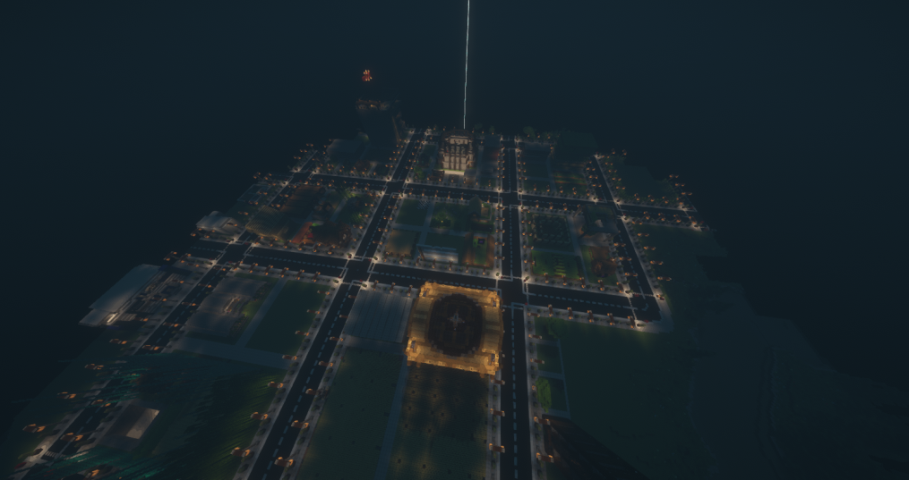
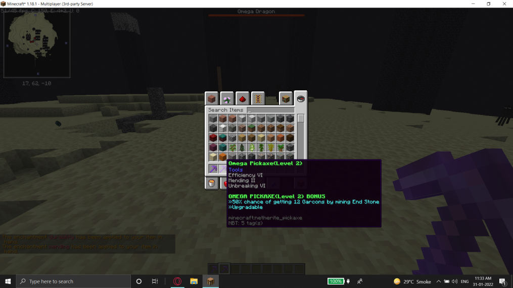
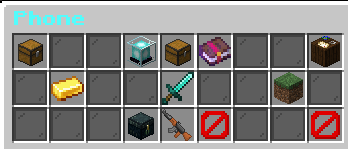
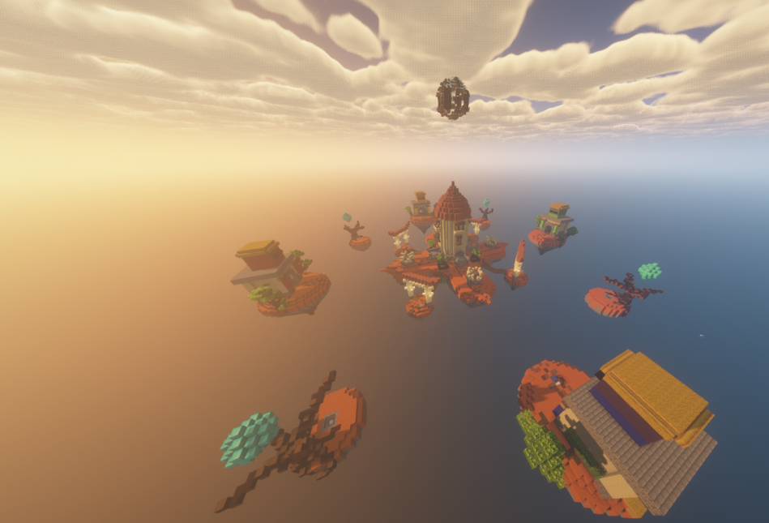

We have Custom Maps with borders, this is to make sure that all the action is near the town. There is also a resource world so that people don't mine the beauty of the World and there is always resources for everyone.
We also have custom Mobs, such as the Omega Dragon. It drops Custom Items which can be used to make the godly Omega Set and the Omega Pickaxe. This has been made to make sure players do not get bored after getting netherite.
Due to the fact that we have a lot of gameplay things, we decided to make a phone with categories to all the server gameplay elements. You can buy things like crate keys, guns directly from the phone.
We also have Guns, ranging from Ak's to Riot Shields and Snipers. All the guns have custom models which can be seen on both Java and Bedrock.
Finally we provide multiple gamemodes like Spleef and Bedwars. This is so that if you get bored on Garconia you can play on the bedwars maps.
